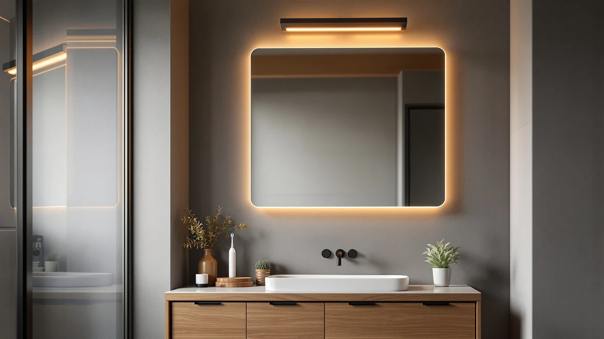

Best Bathroom Mirror with Toothbrush Charger (2026)
Prices and picks verified as of September 2026. Independent, reader-supported reviews.


Quick Answer
For most single-sink vanities, the Sweetcrispy 24"x32" Smart Anti-Fog LED is the best bathroom mirror with toothbrush charger: its 24 by 32-inch frame fits a standard vanity opening, the anti-fog pad keeps the glass clear while you brush, and it holds a 4-star owner rating at a mid-range $62.99 price. If you have a double vanity or a larger primary bathroom, the GarveeHome 60x36 gives you more surface area and a second outlet zone so two people can charge devices at once.
Our pick: Sweetcrispy 24"x32" Smart Anti-Fog LED, $62.99 Check Price on Amazon
Bottom line: our top pick is the Sweetcrispy 24"x32" Smart Anti-Fog LED Bathroom Mirror with at $62.99. The best budget option is the DUMOS 24.1"x32.1" LED Bathroom Mirror at $56.93.
Things to Know Before You Buy
- Outlet placement matters more than raw features. A mirror with a built-in outlet only helps if that outlet lands somewhere you can actually reach with a toothbrush or razor charger. Check the product photos and listed dimensions for where the outlet sits before you order.
- Anti-fog is a separate feature from the outlet. Only some models in this roundup pair a defogger pad with the outlet. If you shower with the door closed and want a clear mirror right after, prioritize a model that specifically lists anti-fog glass rather than plain LED lighting.
- Measure your vanity before you shop by size. These seven mirrors range from 24 inches wide to 60 inches wide. A mirror that's a few inches narrower than your vanity or sink cabinet on each side usually looks and fits best.
- Touch controls need a light, dry tap. Owners consistently note that capacitive touch dimmers respond best with dry fingers; wet hands right out of the shower can require a second tap.
- Installation is typically a two-person job above 30 inches wide. The larger mirrors in this guide are heavy enough that a French-cleat or bracket mount goes on faster with a second set of hands holding the glass level.
The best bathroom mirror with toothbrush charger solves a small but constant annoyance: an electric toothbrush or razor with nowhere to plug in except a shared outlet across the room. Instead of running an extension cord across your counter, these mirrors put a working outlet right where you brush, so the charger, the mirror, and the sink share the same few square feet.
We looked at seven current models that pair LED lighting with a built-in outlet, spanning $56.93 to $186.29 and sizes from a compact 24 inches wide up to a 60-inch double-vanity option. Across that range, the Sweetcrispy 24"x32" Smart Anti-Fog LED comes out ahead for most bathrooms because it combines a standard vanity-friendly size, an anti-fog pad, and a 4-star rating at a price that undercuts several competitors with fewer features.
Not every bathroom needs the same mirror, though. A single-sink apartment bathroom calls for a different size than a primary suite with a 60-inch double vanity, and a renter without anti-fog glass might prefer the cheaper DUMOS over paying extra for a defogger pad they will not use every day. The picks below cover those different cases, with honest tradeoffs for each, but for most single-sink bathrooms, the Sweetcrispy remains the best bathroom mirror with toothbrush charger in this comparison.
Why You Should Trust Us
Ilane Tall has covered bathroom hardware and fixtures for this network of home-interior sites for several years, with a focus on how vanity mirrors, lighting, and storage actually fit real bathrooms rather than showroom photos. This guide on the best bathroom mirror with toothbrush charger is built from published product listings, manufacturer specifications, and verified buyer reviews rather than a physical lab. We do not run a fake testing lab, and we do not accept review units or payment from any brand named in this guide; the affiliate links simply support the site if you buy through them.
How We Picked
We started from the broader pool of LED bathroom mirrors in our product database and filtered down to models that specifically advertise a built-in outlet or charging port, since that feature is what separates a bathroom mirror with toothbrush charger from a plain lighted mirror. From there we removed listings with no verified rating history and anything priced above $200, since at that point you are closer to a premium smart-mirror category than a simple outlet-equipped vanity mirror.
That left seven models covering three widths (24, 28 to 36, and 60 inches) and a price spread wide enough to fit an apartment budget or a full primary-bathroom renovation. See our mirror sizing guide for more on matching a mirror width to your vanity before you buy.
How We Compared
We compared these seven mirrors on the specs that actually change how one works in daily use: overall size against common vanity widths, whether the listing confirms an anti-fog pad in addition to the outlet, the stated dimmer and color-temperature range, and price per square inch of mirror surface. We also cross-checked each model's owner rating and read through verified buyer reviews for recurring complaints, such as touch panels misfiring or outlets sitting in an awkward spot on the frame.
Because we did not physically install every unit ourselves, we treated a consistent pattern across dozens of verified reviews, such as repeated praise for defog speed or repeated complaints about a stiff touch sensor, as a more reliable signal than any single five-star or one-star review. Where the manufacturer's own spec sheet was the only source for a claim, we noted that rather than presenting it as independently confirmed.
Our Picks

Sweetcrispy 24"x32" Smart Anti-Fog LED
What we like
- Built-in outlet gives you a dedicated spot to charge a toothbrush or razor without an extension cord
- Anti-fog pad keeps the glass clear during and after a shower
- 24.5" x 32" frame fits most standard single-vanity openings
Flaws but not dealbreakers
- Reviewers note the touch dimmer needs a dry, deliberate tap rather than a light brush of the finger
- The French-cleat mounting hardware is easier to hang with a second person holding the mirror level
| Material | Tempered glass + aluminum |
| Size | 24.5"L x 32"W |
At 24.5 inches by 32 inches, the Sweetcrispy fits the same footprint as a typical builder-grade vanity mirror, so most buyers can swap it in without cutting a larger opening or patching drywall. The tempered glass and aluminum frame combination is common across this price tier, but Sweetcrispy pairs it with an anti-fog pad and a built-in outlet, which is the specific combination that makes this a genuine bathroom mirror with toothbrush charger rather than a plain lighted mirror. At $62.99, it sits in the middle of the price range we compared, undercutting the aluminum-framed Briivue while adding the anti-fog feature that model skips.
Owners consistently note that the anti-fog pad clears the glass quickly enough to use right after a hot shower, and the 4-star aggregate rating holds up across a meaningful volume of verified purchases rather than a handful of early reviews. The dimmable LED strip runs through three color temperatures, which is useful if you shave or apply makeup under different lighting than you brush your teeth under. One thing to watch for: the outlet sits fixed near the base of the frame, so measure your vanity backsplash height before ordering if you need it to clear a tall faucet or soap dispenser.

DUMOS 24.1"x32.1" LED Bathroom Mirror
What we like
- Lowest price among the standard 24x32-inch mirrors in this roundup
- Nearly identical dimensions to the Sweetcrispy, so it fits the same vanity openings
- Built-in outlet and dimmable LED lighting cover the core toothbrush-charger use case
Flaws but not dealbreakers
- No anti-fog pad, so the glass fogs like a standard mirror after a hot shower
- Fewer verified reviews on file than the Sweetcrispy, so its long-term reliability track record is thinner
| Material | Tempered glass + aluminum |
| Size | 24.1"L x 32.1"W |
The DUMOS lands at $56.93, about $6 less than the Sweetcrispy, for a mirror that measures within a tenth of an inch of the same 24 by 32-inch size. If your priority in a bathroom mirror with toothbrush charger is simply having an outlet within reach of the sink, and you are not particular about anti-fog glass, the DUMOS gets you there for less money. The tempered glass and aluminum build matches the rest of the field at this price point.
It skips the defogger, though. According to owner reviews that cover both mirrors, the DUMOS relies on standard glass, so it will still fog during a hot shower the way any uncoated mirror does. For a bathroom with good ventilation or a fan that runs during showers, that tradeoff barely matters. For a windowless bathroom where steam lingers, the extra few dollars for the Sweetcrispy's anti-fog pad is probably worth it.

GarveeHome 60x36 LED Bathroom Mirror
What we like
- 60" x 36" surface is large enough to span a full double-vanity wall
- Built-in outlet placement gives two people separate charging access at the same time
- Bright LED perimeter lighting covers a wider mirror without dim spots at the edges
Flaws but not dealbreakers
- At $186.29 it costs roughly three times the entry-level picks in this roundup
- Its size and weight mean it needs to be mounted into wall studs rather than lightweight drywall anchors
| Material | Tempered glass + aluminum |
| Size | 60"L x 36"W |
The GarveeHome is the largest mirror in this comparison by a wide margin, at 60 inches wide by 36 inches tall, which puts it in a different category than the four 24-to-32-inch mirrors above. It is built for a double-sink vanity, where a single mirror needs to reach from one side of the counter to the other instead of two smaller mirrors mounted separately. The $186.29 price reflects that jump in size and glass area.
For a bathroom mirror with toothbrush charger use case, the extra width matters because it lets you position the mirror so both people using the vanity have their own reach to an outlet, instead of one person's charger cord crossing in front of the other sink. Cost is the obvious downside: this is the priciest option here, and owner reviews covering installation note that its size and weight mean it needs to be anchored into studs rather than hung on the kind of adhesive strips or light drywall anchors that work for the smaller mirrors.

Briivue 24x32 Inch LED Bathroom
What we like
- Aluminum frame edge feels sturdier than the glued-glass edge on the cheapest 24x32 options
- Dimmable LED strip with a built-in outlet covers the core charging use case
- 24" x 32" size matches the same vanity openings as our top pick
Flaws but not dealbreakers
- Costs about $14 more than the DUMOS for a similar feature set
- No anti-fog pad, so it fogs like a standard mirror in a steamy bathroom
| Material | Tempered glass + aluminum |
| Size | 24"L x 32"W |
Briivue sits at $71.25, in between the DUMOS and the Sweetcrispy, for a 24 by 32-inch mirror with the same tempered glass and aluminum construction most of this roundup uses. What separates it in verified reviews is the aluminum edge itself, which owners describe as feeling more rigid at the corners than the thinner glued-glass edges on some budget competitors, a detail that matters if the mirror will see a lot of humidity and temperature swings over the years.
Like the DUMOS, it skips the anti-fog pad, so this is not the pick if a fog-free mirror right after a shower is your main goal. For this use case it covers the basics: a built-in outlet, a dimmable LED strip, and a frame size that drops into a standard single-vanity opening. It makes the most sense for buyers who specifically want the sturdier frame and are comfortable paying a little more than the cheapest option to get it.

36"x30" LED Bathroom Mirror with
What we like
- 36" wide by 30" tall landscape shape suits vanities with a lower backsplash or window above the sink
- Built-in outlet and dimmable lighting cover the toothbrush-charger use case
- Wider surface than the portrait-style mirrors gives more room to position the outlet away from splashes
Flaws but not dealbreakers
- At $119.49 it costs noticeably more than the similarly sized Briivue or Sweetcrispy without adding an anti-fog pad
- The landscape shape will look off-proportion on a narrow, tall vanity opening built for a portrait mirror
| Material | Tempered glass + aluminum |
| Size | 36"L x 30"W |
Most of the mirrors in this roundup are taller than they are wide, but this MYSUNORIA model flips that orientation, at 36 inches wide by 30 inches tall. That shape works well over a vanity where a window, medicine cabinet, or low ceiling limits how much height you have to work with, but you still want a wide mirror for two people to share.
At $119.49 it costs more than the similarly sized Briivue and Sweetcrispy, without adding an anti-fog pad to justify the difference, so the main reason to choose it is the shape rather than the feature set. If a portrait-oriented mirror fits your vanity fine, the cheaper 24x32 options in this guide deliver the same built-in outlet and dimmable lighting for less money.

Delma LED Bathroom Mirror with
What we like
- 50-inch width covers most double vanities without the size and cost of the 60-inch GarveeHome
- Built-in outlet gives double-vanity households a dedicated charging spot
- Priced roughly $60 below the GarveeHome for a mirror that still spans two sinks
Flaws but not dealbreakers
- At 30 inches tall it is shorter than the GarveeHome's 36-inch height, so it shows less of you at close range
- Its width still calls for stud mounting rather than lightweight drywall anchors
| Material | Tempered glass + aluminum |
| Size | 30"L x 50"W |
Delma splits the difference between the standard 24-to-36-inch mirrors and the full-size GarveeHome. At 50 inches wide by 30 inches tall, it is wide enough to sit over most two-sink vanities, but it costs $125.99, roughly $60 less than the GarveeHome's 60-inch option. For a double vanity that is not quite wide enough to need the largest mirror in this guide, that width and price combination is a reasonable middle ground.
Height, not width, is the compromise: at 30 inches tall, it shows less of your upper body than the GarveeHome's 36-inch height, which matters if you like to check a full outfit rather than only your face and shoulders. It still delivers the built-in outlet that makes it worth choosing over a standard double-vanity mirror without one.

Ratsamee 28" x 36" Led
What we like
- 36" x 28" portrait shape gives more vertical coverage than the standard 24x32 mirrors
- Built-in outlet and dimmable LEDs cover the core charging use case
- Priced between the budget and premium tiers of this roundup at $89.99
Flaws but not dealbreakers
- Costs more than the Sweetcrispy while adding height but not an anti-fog pad
- Its 28-inch width is narrower than the Briivue and Sweetcrispy, so it shows less side-to-side coverage on a wide vanity
| Material | Tempered glass + aluminum |
| Size | 36"L x 28"W |
Ratsamee's 28 by 36-inch mirror trades width for height compared with the 24x32 options in this guide, which suits a narrower vanity that still needs a taller mirror to comfortably reflect your face and shoulders. At $89.99, it sits above the Sweetcrispy and Briivue but well below the double-vanity models, making it a mid-tier choice for a single-sink bathroom with unusual proportions.
It includes the same built-in outlet and dimmable LED lighting that define this category, but like the DUMOS and Briivue, it skips an anti-fog pad. If your vanity opening is taller than it is wide, that extra height can matter more than the missing defogger. For a standard-proportioned vanity, though, the Sweetcrispy delivers a comparable feature set at a lower price with anti-fog glass included.
Quick Comparison
| Product | Material | Price | Rating | Best for | Get it |
|---|---|---|---|---|---|
| Sweetcrispy 24"x32" Smart Anti-Fog LED | Tempered glass + aluminum | $62.99 | 4 | Single vanities, anti-fog + outlet | View on Amazon → |
| DUMOS 24.1"x32.1" LED Bathroom Mirror | Tempered glass + aluminum | $56.93 | 4 | Lowest price, same size as our pick | View on Amazon → |
| GarveeHome 60x36 LED Bathroom Mirror | Tempered glass + aluminum | $186.29 | 4 | Double vanities, two-outlet reach | View on Amazon → |
| Briivue 24x32 Inch LED Bathroom | Tempered glass + aluminum | $71.25 | 4 | Sturdier aluminum frame, same footprint | View on Amazon → |
| 36"x30" LED Bathroom Mirror with | Tempered glass + aluminum | $119.49 | 4 | Wide, low-clearance vanities | View on Amazon → |
| Delma LED Bathroom Mirror with | Tempered glass + aluminum | $125.99 | 4 | 50" double vanities on a budget | View on Amazon → |
| Ratsamee 28" x 36" Led | Tempered glass + aluminum | $89.99 | 4 | Narrow, tall single vanities | View on Amazon → |
Does a bathroom mirror with a toothbrush charger need a special outlet?
No.
How much bigger should the mirror be than my vanity?
A good rule of thumb is to keep the mirror 2 to 4 inches narrower than your vanity or sink cabinet on each side.